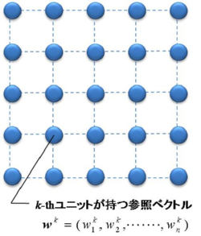
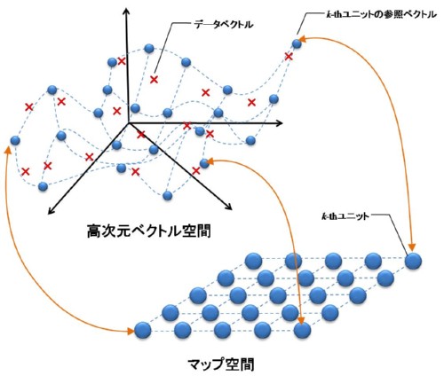

自己組織化マップ（SOM：Self-Organizing Map）
SOMドキュメント
（2017年6月に更新）SOMのドキュメントを公開しました！下の解説よりも体系的に詳しく解説しています．ぜひご覧ください．
自己組織化マップ（SOM）ドキュメント
SOMとは
SOMはニューラルネットワークの一種で与えられた入力情報の類似度をマップ上での距離で表現するモデルです．技術が発達した現代では複雑な情報が数多く存在します． しかしそのような高次元データを人間が瞬時に理解することは困難です．SOMは高次元データの中に存在する傾向や相関関係の発見などに応用することができ，人間が高次元データを視覚的に理解する手助けを行ってくれます．
SOMの特徴を一言であげるとすれば様々な高次元データを予備知識なし（教師なし）にクラスタリングできる点にあります．またこれが自己組織化といわれる所以です．
SOMは主にデータマイニングの１手法として応用され， データの分類，視覚化，要約などを得意としています．現在ではプロセス解析，制御，検索システム，さらには経営のための情報分析など実社会において重要な分野へ応用されています．
SOMの構造
SOMは規則的に配置された複数のユニットから構成されます．ここではユニットを2次元格子状に並べた2次元SOMを示していますが，この他にもユニットを直線状に並べた1次元SOM，立体的に並べた3次元SOM，さらには4次元以上に並べることもできます．通常頻繁に用いられるのは1次元や2次元までの人間が見やすい次元のマップです．

2次元SOM
SOMの各ユニットは入力ベクトルと同次元の参照ベクトルを持っています．
SOMは入力ベクトルを参照ベクトルと比較し，入力ベクトルと一番近い参照ベクトルを持つユニットのマップ上での座標へ変換します．この操作のことを写像といい，SOMは入力ベクトルが存在するベクトル空間からユニットが配置されるマップ空間へ入力ベクトルを写像します．また各ユニットが持つ参照ベクトルはマップ空間からベクトル空間への逆写像となります．

SOMはベクトル空間上での入力ベクトル同士の関係性が写像されたマップ空間上でも保たれるように，自分自身で学習を行います．つまりSOMは，教師なし学習によってベクトル空間からマップ空間への同相写像を獲得できるのです．
ベクトル空間からマップ空間への写像
SOMの学習
SOMに入力ベクトルが与えられると入力ベクトルに最も近い参照ベクトルを持つユニットが勝者ユニットとなります． このときマップ上で勝者ユニットの近くに位置するユニットほど，入力ベクトルに対して強く学習する権利を獲得し，その強さに応じて参照ベクトルを入力ベクトルへと近づけるように学習します． このときの学習の強さは勝者ユニットが一番強く，マップ上での位置が勝者ユニットから離れていくほど弱くなります．このような参照ベクトルの更新を色々な入力ベクトルに対して繰り返していくと，ベクトル空間上での入力ベクトル同士の関係性を保存したマップを得ることができます．
また，SOMの学習法には大きく分けてOnline-LearningとBatch-Learningがあります．それぞれにメリットとデメリットがあるので場合によって使い分けが必要です．
＜Online-Learning＞
SOMには入力ベクトルが1つずつ与えられ，そのつど参照ベクトルの更新を行います．適時入力されたデータのみに対して学習を行えばよいので，Batch-Learningと比べて1回の学習にかかる時間的なコストやメモリ容量などの点において優れています．
また学習初期にデータが揃っておらず，データを収集しながら学習を行う場合にOnline-Learningは適しています．
一方で，1回の学習で1個のデータに対してのみ学習を行うので，学習で更新されるマップには特定のデータの影響が強く残ります．そのためOnline-Learningで得られるマップには偏りが生じることがあります．
＜Batch-Learning＞
用意された入力ベクトルの集合を一度に与えて学習を行います．1回の学習で全ての入力ベクトルが考慮された形で参照ベクトルの更新を行うため，安定した学習が期待でき，バランスのとれたマップを獲得することができます．
しかしこの場合には，入力データが全て揃っていることが前提となっているため，学習時にデータが揃えられない場合にはBatch-Learningは適していません．また入力データを全て記憶しておかなければならないので，使用メモリ量などの点においてOnline-Learningに劣ります．
Demo：入力分布の学習
Learnボタンで学習開始，もう一度押すとStopです．Resetボタンを押すと入力分布も変わります．
| Online-Learning SOM | Batch-Learning SOM |
最初は絡まりあったマップだったものが学習によってきれいに広がっていく様子が分かると思います．特にBatch-Learning SOMは学習の初期のうちから均質なマップが得られます．
Demo：巡回セールスマン問題への適用
巡回セールスマン問題とは与えられた全ての点をできるだけ短く周ることのできるルートを探すという問題です．| リングSOMの巡回セールスマン問題への適用 |
全ての点を周るルートのパターンは点が増えれば増えるほど爆発的に増えていきます．全てのパターンを比較して最短ルートを探すのはとても時間がかかるのですが，SOMを使ってまぁまぁ悪くないルートを短い時間で探すことができます．